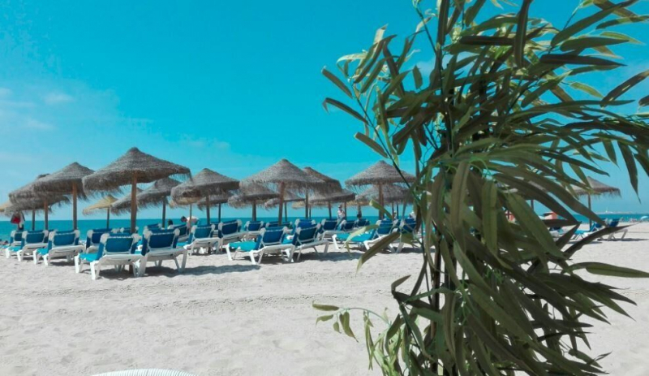
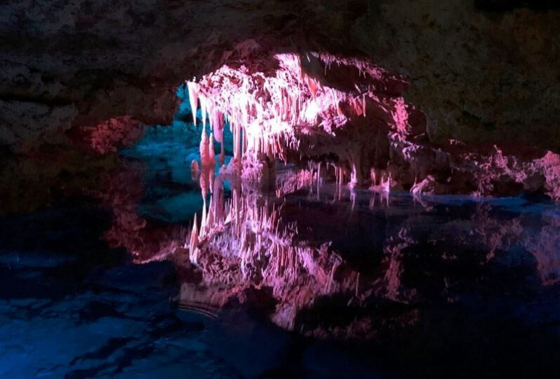

España es un país turístico con una desarrollada infraestructura en el sector servicios, situándose entre los tres más visitados del mundo, al que acuden anualmente millones de viajeros atraídos por sus playas y agradable clima, el abundante patrimonio artístico del país y la riqueza gastronómica, además de ser una de las naciones más ricas en patrimonio cultural del planeta debido al gran número de civilizaciones que dejaron su impronta y legado en la península ibérica.
España puede presumir de sus cifras en el sector turístico, con una infraestructura en el sector servicios inigualable. Se sitúa como el segundo país más visitado del mundo, de acuerdo con la Organización Mundial del Turismo. Los viajeros se ven atraídos por las playas, el clima, los paisajes y la gastronomía de una de las naciones más ricas en patrimonio cultural debido al gran número de civilizaciones que dejaron su legado aquí.
| España - Turismo Internacional |
| Fecha |
Llegadas anuales |
| 2021 |
31.180.802 |
| 2020 |
18.933.103 |
| 2019 |
83.509.153 |
| 2018 |
82.808.413 |
| 2017 |
81.868.522 |
| 2016 |
75.315.008 |
Top ciudades más visitadas de España
- Madrid
- Barcelona
- Sevilla
- Valencia
- Benidorm
Mejores sitios para el turismo
Andalucia
Almería: Parque Natural de Cabo de Gata
El mayor espacio protegido del litoral Mediterráneo, con una gran diversidad de flora y fauna, en el que visitar playas urbanas, naturales, calas escondidas e impresionantes acantilados volcánicos.
Cádiz: Playa de la Victoria

Playa urbana que forma parte de la Costa de la Luz, con casi 3 kilómetros de longitud sobre la costa del océano Atlántico. Es perfecta para pasar un día relajado en compañía de amigos o familiares.
Córdoba: Mezquita Catedral de Córdoba
Mezquita de estilo árabe declarada Patrimonio de la Humanidad en 1984. Con 1.300 columnas sobre las que se apoyan 365 arcos de herradura bicolores, este templo está considerado como uno de los monumentos más importantes de España y de Occidente.
Granada: La Alhambra

Conjunto de palacios, jardines y fortaleza situado en la zona más elevada de la ciudad. Creada originalmente con propósitos militares, convertido en uno de los monumentos más visitados de España y declarado Patrimonio Cultural de la Humanidad en 1984.
Aragón
Huesca: Monasterio San Juan de la Peña

Monasterio de la época medieval donde se refleja la historia de los inicios del Reino Aragonés. Allí encontramos influencia de diferentes estilos con sepulturas de distintos reyes tanto de Aragón como de Pamplona.
Teruel: Albarracín

Monumento nacional desde junio de 1961, construido en la Edad Media y que se caracteriza por ser un pueblo rodeado por una muralla en la que encontramos diferentes edificaciones históricas en su interior como son la alcazaba musulmana, su catedral o la Torre del Andador.
Zaragoza: Basílica de Nuestra Señora del Pilar

Majestuoso templo barroco delimitado a un lado por la Plaza del Pilar y, por el otro, por el río Ebro. Su interior acoge a la Virgen del Pilar y alberga bombas de la Guerra Civil española lanzadas en el año 1936 que nunca llegaron a explotar.
Asturias
Asturias: Santa María del Naranco

Antiguo palacio prerrománico localizado a cuatro kilómetros de Oviedo, considerado Patrimonio Mundial de la Humanidad por la UNESCO desde diciembre de 1985.
Islas Baleares
Mallorca: Cuevas del Drach

Cuatro grandes cuevas albergan uno de los mayores lagos subterráneos de Europa, en el que se ofrecen conciertos en directo. Gracias a esto y a su maravillosa iluminación, podemos disfrutar de una imagen inigualable.
Canarias
Las Palmas: Playa de Las Canteras

Sus aguas tranquilas y sus casi tres kilómetros de extensión han convertido a la playa de Las Canteras en una de las más conocidas de la isla. El arenal, galardonado con el Travellers’ Choice Playas 2018, está rodeado de todo tipo de servicios por lo que es perfecto para visitar con los más pequeños.
Tenerife: Loro Parque

Situado en el Puerto de la Cruz, es un zoológico donde podemos disfrutar de una amplia variedad de plantas tropicales, de diversa fauna como los gorilas y un amplio acuario.